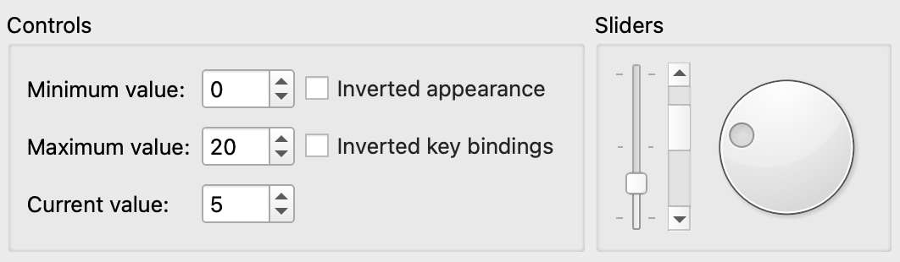

Sliders Example
The Sliders example shows how to use the different types of sliders available in Qt: QSlider, QScrollBar and QDial.
Qt provides three types of slider-like widgets: QSlider, QScrollBar and QDial. They all inherit most of their functionality from QAbstractSlider, and can in theory replace each other in an application since the differences only concern their look and feel. This example shows what they look like, how they work and how their behavior and appearance can be manipulated through their properties.
The example also demonstrates how signals and slots can be used to synchronize the behavior of two or more widgets, and how to override resizeEvent() to implement a responsive layout.

Screenshot of the Sliders example
The Sliders example consists of two classes:
SlidersGroupis a custom widget. It combines a QSlider, a QScrollBar and a QDial.Windowis the main widget combining a QGroupBox and a SlidersGroup. The QGroupBox contains several widgets that control the behavior of the slider-like widgets.
First we will review the Window class, then we will take a look at the SlidersGroup class.
Window Class Definition
class Window : public QWidget { Q_OBJECT public: Window(QWidget *parent = nullptr); private: void createControls(const QString &title); void resizeEvent(QResizeEvent *e); SlidersGroup *slidersGroup; QGroupBox *controlsGroup; QLabel *minimumLabel; QLabel *maximumLabel; QLabel *valueLabel; QCheckBox *invertedAppearance; QCheckBox *invertedKeyBindings; QSpinBox *minimumSpinBox; QSpinBox *maximumSpinBox; QSpinBox *valueSpinBox; QBoxLayout *layout; };
The Window class inherits from QWidget. It displays the slider widgets and allows the user to set their minimum, maximum and current values and to customize their appearance, key bindings and orientation. We use a private createControls() function to create the widgets that provide these controlling mechanisms and to connect them to the slider widgets.
Window Class Implementation
Window::Window(QWidget *parent) : QWidget(parent) { slidersGroup = new SlidersGroup(tr("Sliders")); createControls(tr("Controls"));
In the constructor we first create the SlidersGroup widget that displays the slider widgets. With createControls() we create the controlling widgets, and connect those to to the sliders.
layout = new QBoxLayout(QBoxLayout::LeftToRight);
layout->addWidget(controlsGroup);
layout->addWidget(slidersGroup);
setLayout(layout);
minimumSpinBox->setValue(0);
maximumSpinBox->setValue(20);
valueSpinBox->setValue(5);
setWindowTitle(tr("Sliders"));
}
We put the groups of control widgets and the sliders in a horizontal layout before we initialize the minimum, maximum and current values. The initialization of the current value will propagate to the slider widgets through the connection we made between valueSpinBox and the SlidersGroup widgets. The minimum and maximum values propagate through the connections we created with createControls().
void Window::createControls(const QString &title) { controlsGroup = new QGroupBox(title); minimumLabel = new QLabel(tr("Minimum value:")); maximumLabel = new QLabel(tr("Maximum value:")); valueLabel = new QLabel(tr("Current value:")); invertedAppearance = new QCheckBox(tr("Inverted appearance")); invertedKeyBindings = new QCheckBox(tr("Inverted key bindings"));
In the private createControls() function, we let a QGroupBox (controlsGroup) display the control widgets. A group box can provide a frame, a title and a keyboard shortcut, and displays various other widgets inside itself. The group of control widgets is composed by two checkboxes, and three spin boxes with labels.
After creating the labels, we create the two checkboxes. Checkboxes are typically used to represent features in an application that can be enabled or disabled. When invertedAppearance is enabled, the slider values are inverted. The table below shows the appearance for the different slider-like widgets:
| QSlider | QScrollBar | QDial | ||||
|---|---|---|---|---|---|---|
| Normal | Inverted | Normal | Inverted | Normal | Inverted | |
| Qt::Horizontal | Left to right | Right to left | Left to right | Right to left | Clockwise | Counterclockwise |
| Qt::Vertical | Bottom to top | Top to bottom | Top to bottom | Bottom to top | Clockwise | Counterclockwise |
It is common to invert the appearance of a vertical QSlider. A vertical slider that controls volume, for example, will typically go from bottom to top (the non-inverted appearance), whereas a vertical slider that controls the position of an object on screen might go from top to bottom, because screen coordinates go from top to bottom.
When the invertedKeyBindings option is enabled (corresponding to the QAbstractSlider::invertedControls property), the slider's wheel and key events are inverted. The normal key bindings mean that scrolling the mouse wheel "up" or using keys like page up will increase the slider's current value towards its maximum. Inverted, the same wheel and key events will move the value toward the slider's minimum. This can be useful if the appearance of a slider is inverted: Some users might expect the keys to still work the same way on the value, whereas others might expect PageUp to mean "up" on the screen.
Note that for horizontal and vertical scroll bars, the key bindings are inverted by default: PageDown increases the current value, and PageUp decreases it.
minimumSpinBox = new QSpinBox;
minimumSpinBox->setRange(-100, 100);
minimumSpinBox->setSingleStep(1);
maximumSpinBox = new QSpinBox;
maximumSpinBox->setRange(-100, 100);
maximumSpinBox->setSingleStep(1);
valueSpinBox = new QSpinBox;
valueSpinBox->setRange(-100, 100);
valueSpinBox->setSingleStep(1);
Then we create the spin boxes. QSpinBox allows the user to choose a value by clicking the up and down buttons or pressing the Up and Down keys on the keyboard to modify the value currently displayed. The user can also type in the value manually. The spin boxes control the minimum, maximum and current values for the QSlider, QScrollBar, and QDial widgets.
connect(slidersGroup, &SlidersGroup::valueChanged,
valueSpinBox, &QSpinBox::setValue);
connect(valueSpinBox, &QSpinBox::valueChanged,
slidersGroup, &SlidersGroup::setValue);
connect(minimumSpinBox, &QSpinBox::valueChanged,
slidersGroup, &SlidersGroup::setMinimum);
connect(maximumSpinBox, &QSpinBox::valueChanged,
slidersGroup, &SlidersGroup::setMaximum);
connect(invertedAppearance, &QCheckBox::toggled,
slidersGroup, &SlidersGroup::invertAppearance);
connect(invertedKeyBindings, &QCheckBox::toggled,
slidersGroup, &SlidersGroup::invertKeyBindings);
QGridLayout *controlsLayout = new QGridLayout;
controlsLayout->addWidget(minimumLabel, 0, 0);
controlsLayout->addWidget(maximumLabel, 1, 0);
controlsLayout->addWidget(valueLabel, 2, 0);
controlsLayout->addWidget(minimumSpinBox, 0, 1);
controlsLayout->addWidget(maximumSpinBox, 1, 1);
controlsLayout->addWidget(valueSpinBox, 2, 1);
controlsLayout->addWidget(invertedAppearance, 0, 2);
controlsLayout->addWidget(invertedKeyBindings, 1, 2);
controlsGroup->setLayout(controlsLayout);
}
Then we connect the slidersGroup and the valueSpinBox to each other, so that the slider widgets and the control widget will behave synchronized when the current value of one of them changes. The valueChanged() signal is emitted with the new value as argument. The setValue() slot sets the current value of the widget to the new value, and emits valueChanged() if the new value is different from the old one.
We synchronize the behavior of the control widgets and the slider widgets through their signals and slots. We connect each control widget to both the horizontal and vertical group of slider widgets. We also connect orientationCombo to the QStackedWidget, so that the correct "page" is shown. Finally, we lay out the control widgets in a QGridLayout within the controlsGroup group box.
void Window::resizeEvent(QResizeEvent *) { if (width() == 0 || height() == 0) return; const double aspectRatio = double(width()) / double(height()); if (aspectRatio < 1.0) { layout->setDirection(QBoxLayout::TopToBottom); slidersGroup->setOrientation(Qt::Horizontal); } else if (aspectRatio > 1.0) { layout->setDirection(QBoxLayout::LeftToRight); slidersGroup->setOrientation(Qt::Vertical); } }
Lastly, we override resizeEvent() from QWidget. We guard against dividing by zero, and otherwise compute the aspect ratio of the widget. If the window has a portrait format, then we set the layout to organize the groups of control widgets and sliders vertically, and we give the sliders a horizontal orientation. If the window has a landscape format, then we change the layout to show the sliders and controlling widgets side by side, and give the sliders a vertical orientation.
SlidersGroup Class Definition
class SlidersGroup : public QGroupBox { Q_OBJECT public: SlidersGroup(const QString &title, QWidget *parent = nullptr); signals: void valueChanged(int value); public slots: void setValue(int value); void setMinimum(int value); void setMaximum(int value); void invertAppearance(bool invert); void invertKeyBindings(bool invert); void setOrientation(Qt::Orientation orientation); private: QSlider *slider; QScrollBar *scrollBar; QDial *dial; QBoxLayout *slidersLayout; };
The SlidersGroup class inherits from QGroupBox. It provides a frame and a title, and contains a QSlider, a QScrollBar and a QDial.
We provide a valueChanged() signal and a public setValue() slot with equivalent functionality to the ones in QAbstractSlider and QSpinBox. In addition, we implement several other public slots to set the minimum and maximum value, and invert the slider widgets' appearance as well as key bindings, and set the orientation.
SlidersGroup Class Implementation
SlidersGroup::SlidersGroup(const QString &title, QWidget *parent) : QGroupBox(title, parent) { slider = new QSlider; slider->setFocusPolicy(Qt::StrongFocus); slider->setTickPosition(QSlider::TicksBothSides); slider->setTickInterval(10); slider->setSingleStep(1); scrollBar = new QScrollBar; scrollBar->setFocusPolicy(Qt::StrongFocus); dial = new QDial; dial->setFocusPolicy(Qt::StrongFocus);
First we create the slider-like widgets with the appropriate properties. In particular we set the focus policy for each widget. Qt::FocusPolicy is an enum type that defines the various policies a widget can have with respect to acquiring keyboard focus. The Qt::StrongFocus policy means that the widget accepts focus by both tabbing and clicking.
connect(slider, &QSlider::valueChanged, scrollBar, &QScrollBar::setValue);
connect(scrollBar, &QScrollBar::valueChanged, dial, &QDial::setValue);
connect(dial, &QDial::valueChanged, slider, &QSlider::setValue);
connect(dial, &QDial::valueChanged, this, &SlidersGroup::valueChanged);
Then we connect the widgets with each other, so that they will stay synchronized when the current value of one of them changes.
We connect dial's valueChanged() signal to the SlidersGroup's valueChanged() signal, to notify the other widgets in the application (i.e., the control widgets) of the changed value.
slidersLayout = new QBoxLayout(QBoxLayout::LeftToRight);
slidersLayout->addWidget(slider);
slidersLayout->addWidget(scrollBar);
slidersLayout->addWidget(dial);
setLayout(slidersLayout);
}
Finally, we create the layout for the slider widgets within the group box. We start with a horizontal arrangement of the sliders.
void SlidersGroup::setValue(int value) { slider->setValue(value); }
The setValue() slot sets the value of the QSlider. We don't need to explicitly call setValue() on the QScrollBar and QDial widgets, since QSlider will emit the valueChanged() signal when its value changes, triggering a domino effect.
void SlidersGroup::setMinimum(int value) { slider->setMinimum(value); scrollBar->setMinimum(value); dial->setMinimum(value); } void SlidersGroup::setMaximum(int value) { slider->setMaximum(value); scrollBar->setMaximum(value); dial->setMaximum(value); }
The setMinimum() and setMaximum() slots are used by the Window class to set the range of the QSlider, QScrollBar, and QDial widgets.
void SlidersGroup::invertAppearance(bool invert) { slider->setInvertedAppearance(invert); scrollBar->setInvertedAppearance(invert); dial->setInvertedAppearance(invert); } void SlidersGroup::invertKeyBindings(bool invert) { slider->setInvertedControls(invert); scrollBar->setInvertedControls(invert); dial->setInvertedControls(invert); }
The invertAppearance() and invertKeyBindings() slots control the child widgets' invertedAppearance and invertedControls properties.
void SlidersGroup::setOrientation(Qt::Orientation orientation) { slidersLayout->setDirection(orientation == Qt::Horizontal ? QBoxLayout::TopToBottom : QBoxLayout::LeftToRight); scrollBar->setOrientation(orientation); slider->setOrientation(orientation); }
The setOrientation() slot controls the direction of the layout and the orientation of the sliders. In a horizontal group, the sliders have a horizontal orientation, and are laid out on top of each other. In a vertical group, the sliders have a vertical orientation, and are laid out next to each other.